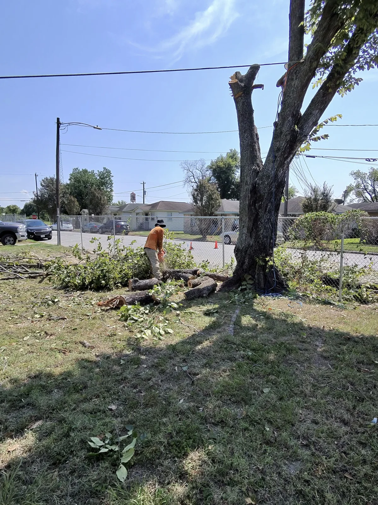
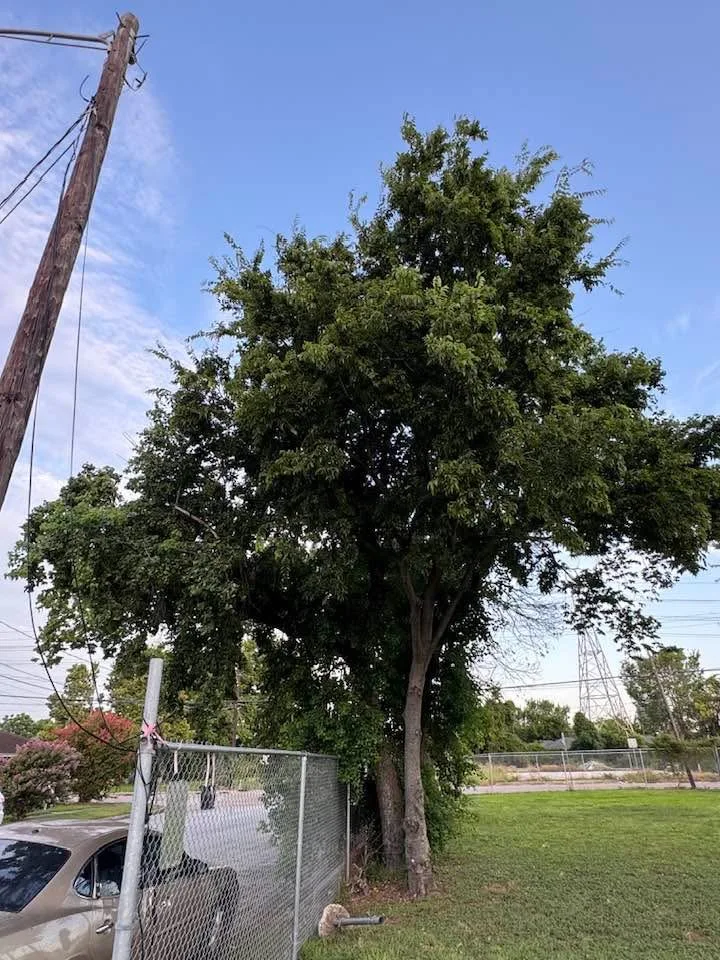
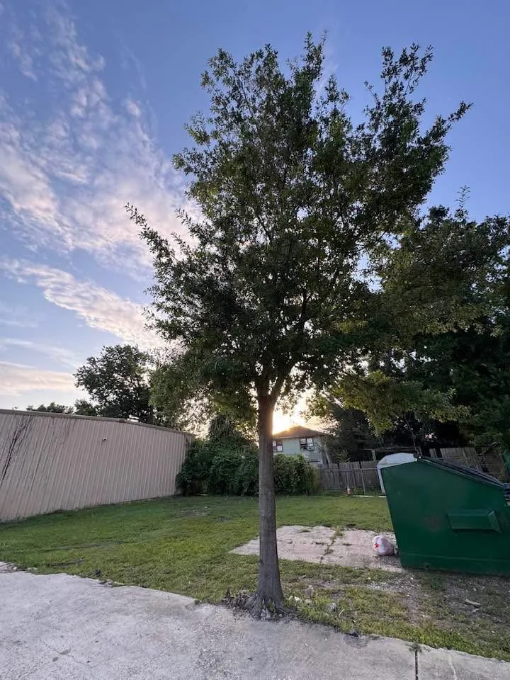
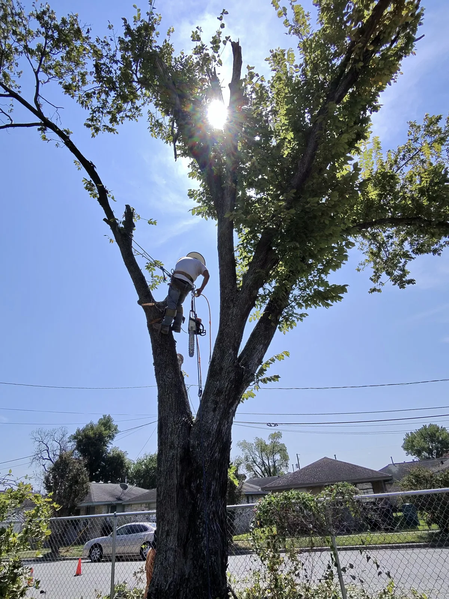
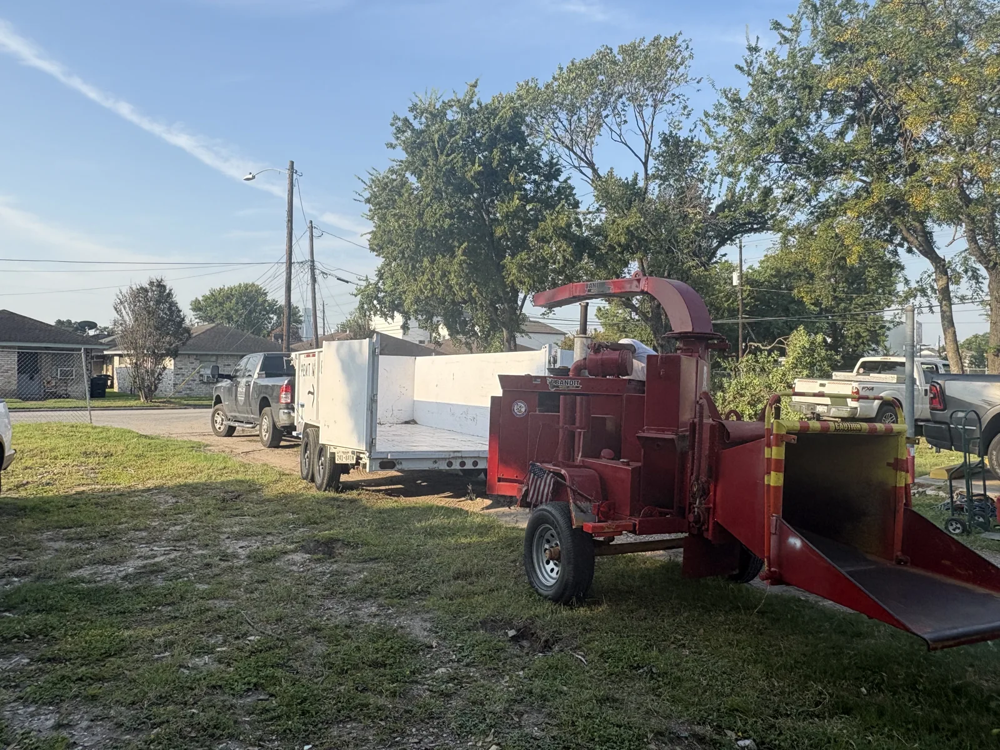
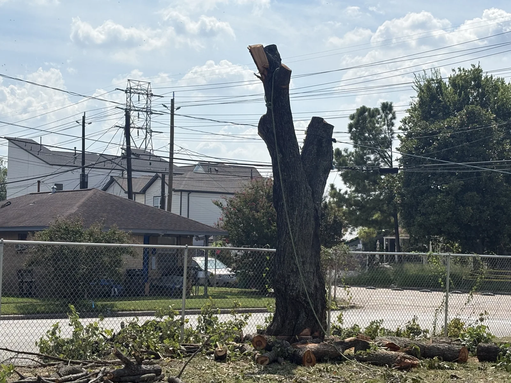
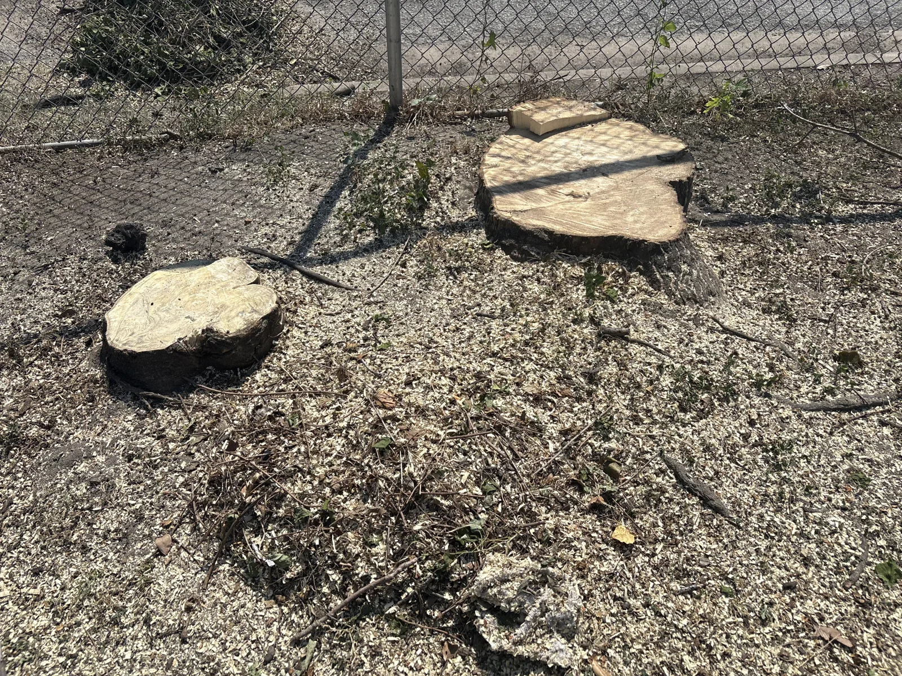
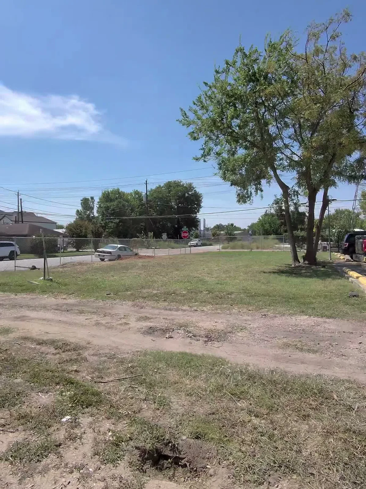

Real work / Valid Tree Service LLC
Tree removal.
From canopy to cleanup.
Follow the crew through climbing, sectional tree removal, ground processing and debris cleanup beside a fenced property.
Request a project bid ↗
Tree removal · Limb and trunk processing · Debris cleanup
The project in pictures
See each stage.







The sequence follows the trees from standing canopy through sectional removal and debris cleanup. Cut stumps are shown as part of the removal result.
On the job
Watch the work.
Both projects / One walkthrough
A look around
with Valid.
This 34-second walkthrough covers both jobs. Original audio is included—press play to listen.
View the other project →Owners · Builders · General contractors
Tell us what needs to go.
Send plans, site photos, access details and your schedule. Request a bid or a site walk for tree removal, clearing, demolition and haul-off.